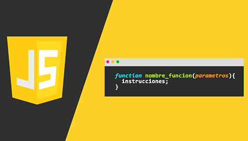

Promises
Using Promises
A Promise is an object representing the eventual completion or failure of an asynchronous operation. Since most people are consumers of already-created promises, this guide will explain consumption of returned promises before explaining how to create them. Essentially, a promise is a returned object to which you attach callbacks, instead of passing callbacks into a function. Imagine a function, createAudioFileAsync(), which asynchronously generates a sound file given a configuration record and two callback functions, one called if the audio file is successfully created, and the other called if an error occurs.